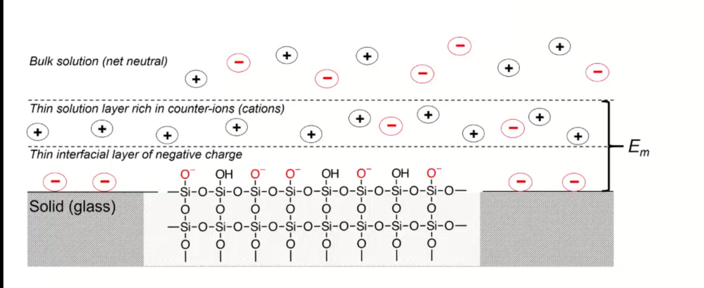

TOC_3
- units
- Analytical concepts
- Equilibrium and volumetric analysis
- Chemical Equilibrium Applied to Analytical Measurements
- lecture 6
- Solution Equilibrium and Systematic Treatment of Chemical Equilibrium
- lecture 7
- Polyprotic Acid Equilibria, Polyprotic Acid-Base Titrations
- lecture 8
- Complexation Equilibria - Quantitative EDTA Titrations
- lecture 9
- More Volumetric Analysis
- Electrochemistry and Potentiometry
- UV-visible spectrophotometry
- Separations and liquid chromatography
- lab notes
*
terms
- internal standard: addition of constant amount of substance similar to analyte to a sample as reference point for determination of the analyte
- matrix effect: effect of non-analyte components on sample
- random error: worse precision
- systematic error: reduces accuracy
- selectivity: measure without interference from other things
- sensitivity: rate of change in signal with changes in analyte
- limit of detection: minimum amount of analyte that be detected with confidence
- precision: how close values are (replicates)
- accuracy: how close to real value
- standard addition: use sample matrix in calibration
- replicate: sample from same source analyzed with same methods
- positive control: known to contain analyte
- negative control: known to contain no analyte
- standard reference material: well characterized
- interferent: cause systematic error in analysis
- t-statistic: assign confidence limits to average results from small sample sizes
- F-test*: compare precision of two methods
- t-test*: compare if two results are same or different statistically
- least squares regression: best fit of line
- G-test: outlier
- For an external standard quantitation, known data from a calibration standard and unknown data from the sample are combined to generate a quantitative report.
- $$K_f = \frac{[MY^{2-}]}{[M^{2+}][Y^{4-}]}$$ usually large
- Ksp = [M+][Cl−] usually small
mt1 problems
unit 1
- detecting signals that are statistically significant: S ≥ μbackground + 3σbackground
- which t-test to use:
- case 1: compare sample mean with population mean (the true value) (needs replicates)
- case 2: use the f-test to compare SD of two sample sets, then compare two sample means (needs replicates)
- case 3: compare methods of single measurements of several different samples
- $$\frac{S}{N}$$ proportionate to $$\sqrt{n}$$
- concentration detection limit: SA = Sbackground + 3σbackground
- what does each standard allow you do to:
- external standard: interpolate unknown from CC
- standard addition: extrapolate unknown from CC (matrix effect)
- internal standard: ratio, add substance similar to analyte, but different and not expected to be found in sample
unit 2
- solubility equilibria: will precipiate form? check if Q > Ksp using the equation [M+][X−]
- solubility equilibria: with x mL 0.y M of MY added to x mL of 0.j M NaI, how much ppt forms and what is the final concentration
- set up reaction equations: MI ⇔ M+ + I− MY + NaI ← MI + NaY
- set up Ksp = [M+][I−], find [I−]
- assume [M+] = 0 at eq, so to find [I−], you subtract concentration of M from total concentration of I, then solve for M
- complexation equilibria: what is the concentration of M2+ when x.0 mL of 0.00y M MCl2 is added to z.0 mL of 0.00j M of EDTA at pH 13.0
- set up ice table with starting concentrations, and Kf expression
- mass balance with known concentrations
- assume because of large Kf [M2+] = 0
- solubility equilibria: solubility of CoCO3 in buffered solution of pH 4.0
- set up equations for Ksp, Ka1, Ka2
- set up mass balance, one for the [Co2+] = ... and [CO32−] = ... and one for the acids
- using known values, substitute and solve for [Co2+]2
- solubility equilibria: solubility of MCl in 0.0x M of NaCN
- given Ksp and Kf, write two equations for each one
- set up mass balance for [M+] and [CN−]
- list assumptions:
- since Kf is large, there is not much free M+
- MCl will dissolve until all CN− used up: [M(CN)2−] > > [CN−]
- [CN−]i = 2[M(CN)2−] = 0.0x M
- [Ag+]i = [Cl−]i = [M(CN)2−]
- XCl is dissolved in a solution of 0.x M ACl, where ACl is soluble and XCl is not very soluble. Given Ksp = [X+][Cl−]
- find equations: ACl ⇔ A+ + Cl−
- set up mass balance: 0.x M = [A+] = [Cl−]total − [Cl−]XCl = [Cl−]total − [X+]
- because [Cl−]XCl = [X−]
- set up charge balance (include all ions): 1[Na+] + 1[X+] = 1[Cl−]
- check number of unknowns is equal to number of equations
- replace unknowns with known and solve for [X−]
- finding the isoelectric point of an amino acid: $$\frac{1}{2} (pK_{a1} + pK_{a2})$$
- titration of M+ with EDTA at a pH of y, in presence of complexing agent
- solubility of MXs in presence of a complexing agent such as NH4Cl
- indirect titration of A with excess and known B and X: BX binds, then with addition of A, released B is amount of A
- A has higher Kf then B
- EDTA titration at pH lower than 10: what is the concentration of M2+ when x.0 mL of 0.00y0 MCl2 is added to z.0 mL of 0.0j M EDTA solution buffered at pH k?
- set up Kf expression: $$K_f = \frac{[CaY^{2-}]}{[M^{+2}][Y^{4-}]}$$
- set up mass balance: $$[EDTA] = \frac{z \times 0.0j \text{ M}}{x + z}$$ $$[MY^{2-}] = \frac{x \times 0.0y \text{ M}}{x + z}$$ assuming all the EDTA forms complex with the metal.
- sub in alpha: [Y4−] = α6[EDTA]free [EDTA]free = [EDTA] − [MY2−]
- sub in known values into the Kf expression to find the concentration of M2+ $$[M^{2+}] = \frac{K_f \alpha_6 [EDTA]_{free}}{[MY^{2-}]}$$
- argentometric titration before eq point: x mL of 0.0y M XCl was titrated with 0.z M of AgNO3
- find pCl at 10 mL of AgNO3:
- calculate how much Ag+ has been added; this is how much Cl− has formed ppt with silver
- subtract Cl− that has formed complex with Ag+ from initial amount of chlorine
- pCl = log[Cl−]
- find pCl at 10 mL of AgNO3:
- argentometric titration at eq: use Ksp
- argentometric titration after eq: calculate excess Ag+, then sub into Ksp expression and solve for [Cl−]
mt 2 problems
unit 3
- balancing electrochemistry equations:
- write unbalanced half-reactions
- add coefficients
- add H$2$O to balance oxygen
- add acid or base to balance hydrogens
- balance charge by adding electrons
- find the ionic strength
- write out dissociation equation for species of interest
- calculate concentrations of ions present
- sub into formula, and calculate, make sure to square charge
- calculating potentials of cell
- identify anode and cathode, then use: Ecell = Ecathode - Eanode
- calculating potentials with nerst equation
- identify anode and cathode half reactions
- write out full reaction
- calculate Eo, and use $$E = E^o - \frac{0.0592}{n} log [\frac{[M^{x+}]}{[M^{y+}]}]$$
- cell notation: Ag (s) | AgCl (s) | 3.0 M KCL (aq) || 0.01 M Fe(CN)63− (aq), 0.01 M Fe(CN)64− (aq), 0.5 M KCl (aq) | Graphite
- anode: Ag (s) | AgCl (s) | 3.0 M KCL (aq)
- cathode: 0.01 M Fe(CN)63− (aq), 0.01 M Fe(CN)64− (aq), 0.5 M KCl (aq) | Graphite
- ||: salt bridge
- |: phase boundry
units
Course Introduction
- analytical chemistry: obtaining, processing, communicating information about composition/structure of matter
- what matter is present and how much
- trends: personalized technology
- making good measurements and know if those measurements are good
Analytical concepts
An Introduction to Analytical Measurements
lecture 1
- assay: is process of determining the amount of analyte (substance being measured) in sample
- analyte:
- qualitative analysis: (identification) quantitative analysis: (quantity)
- signal
- visual detection: simple, low-cost, subjective, not sensitive, large sample volumes, low-throughput (??)
- electrical detection: objective, more sensitive, faster, automate, costly, maintenance, calibration
- voltage
- current
- transducer: converts input stimulus into electrical output
- measurement:
- signal-to-noise ratio: $$\frac{S}{N}$$ is proportional to $$\sqrt{n}$$
- averaged signal S, averaged noise N
- signal-to-noise ratio: $$\frac{S}{N}$$ is proportional to $$\sqrt{n}$$
lecture 2
- assay: set of procedures or methods, latin word for try
- analyte: chemical we are looking for
- qualitative analysis
- quantitative analysis
- measurement:
- signal: can be height or area of line/graph (thing we want) (mean of several measurements)
- noise: unwanted, random fluctuations (sd)
- sample matrix: everything but the analyte.
- matrix: complex and often unknown
- blank: chemist made sample that lacks analyte
- types:
- solvent: same solvent as sample solutions
- method: same solvents and reagents
- sample: tries to approximate the sample matrix, everything but analyte
- types:
- detection limit:
- noise: random fluctuations in measured signal
- blank: a constant (like control) signal measured in absence of analyte
- limit of detection (LOD): smallest concentration of absolute amount of analyte with signal much larger than blank
- signal LOD: units as signal (instrument maker) Smb + zσmb
- means average blank signal plus 3 standard deviations of blank signal
- sample LOD: amount/concentration (user)
- limit of quantitation $$\frac{S}{N} = 10$$: ability to report the concentration
- calibration curve: σDL = 3σmb/m
- three standard deviations divided by the slope
- same approach applied to LOQ
- three standard deviations divided by the slope
lecture 3

- controls:
- positive: standard sample with known quantity of analyte
- prevents situation when there should be a signal but there is no signal (false negative)
- negative: standard sample with no analyete
- prevents situation when there should be no signal and there is a signal (false positive)
- positive: standard sample with known quantity of analyte
- figures of merit
- LOD, LOQ
- accuracy & precision
- error and replicates:
- absolute: x̄ − μ
- relative: $$\frac{\bar{x} - \mu}{\mu} \times 100 \%$$
- replicate: samples from same source
- error and replicates:
- selectivity
- extent that other substances interfere with determination of analyte
- interference: chemical that causes systematic error in measured quantity
- masking agent: prevents components in sample matrix from interfering with analysis
- extent that other substances interfere with determination of analyte
- sensitivity
- ability of method to measure small changes in concentration of analyte
- range: acceptable linearity, accuracy, precision
- dynamic range: range an instrument can read (measurable response but maybe not linear)
- linear range: analyte concentration over which response is proportional to concentration
- robustness
- ability of method to withstand small, uncontrolled changes in operation parameters
- why FOM: demonstrate validity of method by reporting these parameters
- uncertainty and bias:
- random uncertainty: can’t replicate, contributes to imprecision, quantify with stats
- systematic uncertainty: contribute to inaccuracy, repeatable, can correct for it in principle
- types:
- proportional: %, issue for large signals
- constant: always some absolute value, issue for small signals
- calibration curves:
- external calibration in the lab: series of solutions of known concentration of analyte
- concentration detection limit: lowest concentration of analyte in sample that can be detected
- you can find concentration LOD: $$[C]_{DL} = \frac{3\sigma_{mb}}{m}$$
- matrix effects: combined effect of non-analyte components in sample on measurement of analyte
- calibration standards should approximate analytical samples in analyte and in composition of non-analyte species
- matrix too complex, so use standard addition
- standard addition:
- wet lab: prepare standard solutions but with sample and add analyte to “sample”
- find x-intercept: when y = 0, this is the “original” value of x (without the shift in y axis)
- the linear line has been “shifted” on the y axis
lecture 4
- internal standard: intentionally add substance that is not expected to be found in sample (not the analyte) but behaves similarly
- constant amount of internal standard, constant IS signal
- changing concentrations of analyte
- plot ratio between analyte and internal standard vs. ratio of their concentrations $$\frac{S_{A}}{S_{IS}}$$ vs. $$\frac{[A]}{[IS]}$$
- calibration curve:
- single point calibration (one standard) and the origin
- multi-point calibration (4-6)
- effect of systematic error in any one standard solution minimized by existence of other standards
| external standards | standard addition | internal standards |
| create standard solutions with varying/known conc. of analyte | add known quantities of analyte to unknown solution | add known amount of different (but similar) compound to unknown and standards |
| interpolate unknown from CC | extrapolate unknown from CC | ration of signal from analyte to signal from internal standard |
| simple, easy | accounts for matrix | accounts for losses throughout analysis |
| can’t account for matrix or inconsistencies in instrument | lots of samples | cost, prep |
- sig figs:
- pH: pH of 2.45, digits after decimal are how many sig figs the conc. has
- exact number has infinite number of sig figs
Analytical Measurements and Statistics - Gaussian Distribution, Standard Deviation
- gaussian distribution: bell curve
- 1sd: 68%
- 2sd: 95%
- 3sd: 99%
- population vs. sample:
- sample sd approaches population sd as N > 20
- as N increases, sd decreases
- propagation of uncertainty:
- addition/sub: $$\sqrt{\sigma^2_a + \sigma^2_b}$$
- mult/div: RSD used
Analytical Measurements and Statistics - Significance Testing
- significance testing: is difference between two values too large to be explained by random uncertainty
| case 1 t-test | case 2 t test | case 3 t-test | grubb’s test |
| compare experi. to true | compare two experi. results | compare two methods | outlier? |
- null hypothesis: no effect
- choose CI before you do experiments
- CI: probability a difference exists when it doesn’t
- student’s t value: permits use of sample data to test hypothesis without knowing population sd
lecture 5
- t-statistic (case 1): validation, where there is a known or true value
- t-statistic (case 2, same sd): comparing 2 means, is there enough statistical overlap
- t-statistic (case 2, different sd): use F-test
- t-statistic (case 3): paired/matched data
- comparing single measurements made with two methods on several different samples
- before and after (drug trials, same people)
- grubb’s test: determine outlier, make sure to remove if it is an outlier
- equilibrium constant
- activity
- weak acid and weak base
- polyprotic acid
- formulas:
- $$[H^+] = \sqrt{\frac{K_{a2}[HA^-] + K_w}{1 + \frac{[HA^-]}{K_{a1}}}}$$
- $$[H^+] = \sqrt{K_{a2}K_{a1}}$$
- pH = 1/2(pKa1+pKa2) this is also how you get isoelectric point
- formulas:
- amphiprotic substance
Equilibrium and volumetric analysis
Chemical Equilibrium Applied to Analytical Measurements
lecture 6
- systematic treatment of equilibria
- as many equations as unknowns
- chemical equilibrium constant expressions
- charge balance charge on cation1[cation1] + charge on cation2[cation2] = charge on anion1[anion1] + charge on anion2[anion2]
- mass balance (many)
- formal: moles of original chemical formula in solution, without regard for species that already exist
- as many equations as unknowns
- alpha diagrams: can plot alpha as a function of pH
Solution Equilibrium and Systematic Treatment of Chemical Equilibrium
lecture 7
- complexing agent: increases solubility of precipiate
- complex formation: adding excess of B doesn’t always precipiate max amount of A (you can have multiple species of complex)
- titrant: solution of known composition and concentration
- titrand: unknown solution
- titrations:
- acid-base
- complexometric titrations (metal-ligand)
- precipiatation (want ppt)
- redox (titrant is an oxidizing or reducing agent)
- acid-base titrations
- strong acid: eq point always at 7
- weak acid: half eq point = pKa
- Henderson-Hasselbalch Equation: $$pH = pK_a + log \frac{[A^-]}{[HA]}$$
- diprotic acid with strong base (how to calculate pH throughout the titration process): (REVIEW)
- buffer region: H-H equation
- compare $Ka$s
- endpoints for polyprotic species:
- if $$\frac{K_{a,1}}{K_{a,2}}$$ larger than or equal 104, 1st endpoint will be clear (endpoint can disappear into the other)
- if pKa, 2 less than or equal 8, 2nd endpoint will be clear (if larger than 8, then Ka2 too weak)
- triprotic: third endpoint around 12.7, too small, can’t see
- buffers
- effective range: pKa + − 1
- acid-base indicator effective within the same range, but in practice is 0.5
- color transition
Polyprotic Acid Equilibria, Polyprotic Acid-Base Titrations
lecture 8
- indicators: are actually acids and bases
- range Pka plus or minus 1, in practice 0.5
- how to ensure we see the change of color in indicator?
- strong acid: eq point occurs at 7, very steep, the steep portion is almost vertical
- weak acid: Pka of indicator much larger than Pka of weak acid, or indicator changes color too early because not as steep (?), since eq point occurs after pH 7
- weak base: eq point occurs before 7
- gravimetric methods
- obtain analyte by precipitating it
- precipitation titration
- titrant: AgNO3
- argentometric titrations:
- free [Ag+] decreases with small value of Ksp
- small Ksp means bigger number in demoninator (more ppt), pAg is larger
- for titrating: anything that is insoluble when reacted with silver
- endpoint: can be measuring removed or excess
fluorescein:
- titration of halides
- before: colloidal AgX is neg
- after: colloidal AgX is pos
- it depends on the ratio between Ag+ and X− which determines its charge
- titration graph: after eq point, all indicators converge to the same behaviour
- “colloid is a mixture in which one substance consisting of microscopically dispersed insoluble particles is suspended throughout another substance”
- endpoint: can be measuring removed or excess
fluorescein:
- free [Ag+] decreases with small value of Ksp
- EDTA titration
- how to deal with EDTA titrations at other pH:
- $$\alpha_6 = \frac{[Y^{4-}]}{C_{EDTA}}$$
- from Mn+ + Y4− ⇔ MY(n−4)+, we get $$K_f = \frac{[MY^{(n-4)+}]}{[M^{n+}] \alpha_6 c_{EDTA}}$$
- complexing agent: EDTA at basic pH
- for titrating: metal
- pH dependence: as pH increases, amount of unbound metal decreases
- auxiliary complexing agent: ammonia to complex cations and maintain solubility at basic pH
- ACA needs larger binding constant than EDTA but smaller formation constant
- why need basic pH? because many metals precipitate as hydroxoides if pH is too high
- concentration of Y−4 is the most at basic pH (it is pH dependent)
- to use a lower pH: need α6, defines mole fraction of Y−4 at given pH
- rewrite MY formation to use α6cEDTA = [Y−4]
- this gives a conditional formation constant: Kf′(pH) = α6Kf
- rewrite MY formation to use α6cEDTA = [Y−4]
- too much ACA decreases sharpness of endpoint M2+ + 4NH3 ⇔ Zn(NH3)42+ Zn(NH3)42+ + Y4− ⇔ ZnY2− + 4NH3
- to use a lower pH: need α6, defines mole fraction of Y−4 at given pH
- auxiliary complexing agent: ammonia to complex cations and maintain solubility at basic pH
- how to deal with EDTA titrations at other pH:
Complexation Equilibria - Quantitative EDTA Titrations
lecture 9
- indicators for EDTA:
- Eriochrome Black T: only works on some metals, can use backtitration to use with other metals
- orange to red/violet
- Eriochrome Black T: only works on some metals, can use backtitration to use with other metals
- complex titrations
- add masking agents to hide certain metals, needs to have stronger Kf than EDTA
- demasking agent: another metal that binds with masking agent
- auxillary complexing agent: keep metal in solution
- indirect titration
- if titration is slow
- no suitible indicator
- no useful direct titration reaction
- you can add A + B, with B in known excess
- measure leftover B with C
- you can add A + B, with B in known excess
- applications: volhard titration
- titrant: SCN−
- determine: Ag+
- find out how much halide
- indicator: Fe+3
- need to ensure KfAgSCN > KfFeSCN
- back titration for halide determination
- titrate with halide solution with excess Ag
- when all the Cl has been bound, you have Ag in excess
- start titrating the excess Ag with Fe. You add SCN until the solution turns red -> endpoint
- SCN^- turns red at first instance of excess SCN^- by reacting with iron
- titrate with halide solution with excess Ag
- displacement titrations
- want to analyse a metal with EDTA, but if the matrix is unknown, other metals may bind to EDTA that is not the metal of interest
- instead, react Ca2+ with MgY+; Ca2+ has higher Kf will displace Mg2+
- titrate the freed Mg2+ in solution ? we titrate the excess Mg with EDTA?
More Volumetric Analysis
Electrochemistry and Potentiometry
Fundamentals of Electrochemistry
lecture 10/11
- what is electrochemistry: electrical measurements of chemical systems
- inexpensive equipment, can measure complex samples with little sample prep
- reducing/oxidizing:
- reducing agent: is oxidized, so ON increases, and electrons are lost
- oxidizing agent: is reduced, so ON decreases, and electrons are gained
- cell types
- galvanic cell
- the opposite of electrolytic cell
- electrons spontaneously go towards positive charge
- anode (-): electrons leave, so oxidation occurs
- cathode (+): electrons arrive, reduction occurs
- the opposite of electrolytic cell
- electrolytic cell
- requires electricity
- electrical energy into chemical energy
- cell potential is negative
- galvanic cell
- salt bridge
- ensures the solution stays neutral
- completes circuit
- need ions with the same hydrated size so that they move at the same rate
- don’t want direct mixing of reduction/oxidation
- potential
- galvanic: initally positive (electrons want to move from anode to cathode)
- at eq: potential is 0 [Cu$2+$] << 1.00 M << [Zn$2+$]
- reflects driving force of redex reaction towards eq
- half-cell and standard potentials:
- combo of standard half-cells determine overall cell potential
- V1 < V2
- V1: weak oxidizing agent, less easily reduced
- V2: stronger oxidizing agent, more easily reduced
- standard reduction potential: Ecell = Ecathode - Eanode
- Edeg is tabulated for reduction reactions, positive if spontaneous relative to SHE
- SHE is not easy to work with, use other standards like SCE
- Edeg is tabulated for reduction reactions, positive if spontaneous relative to SHE
- V1 < V2
- combo of standard half-cells determine overall cell potential
- galvanic: initally positive (electrons want to move from anode to cathode)
- ions in solution: concentration vs activity
- ions interact electrostatically
- can interact with other things in solution that have charge
- other ions can partially shield the ions of interest (like Ca2+ and SO42−)
- this means Ksp gets larger with more salt added (NaCl also partially sheild), takes more CaSO4 to dissolve in water as you add more NaCl -> activity
activity
- value of concentration equilibrium constants increase at high electrolyte concentration
- what does this mean chemically: there is more of the ion product in solution
- concentration equilibrium constants don’t consider other dissolved ions and their electrostatic interations and ion-ion interactions
- solubility increases???
- activity coefficients: ai = γic
- decrease as ionic strength increases
- thermodynamic eq constant is written in terms of activities
- can ignore for very dilute solutions
- value of concentration equilibrium constants increase at high electrolyte concentration
ionic strength
- the net effect of dissolved electrolytes: $$\mu = \frac{1}{2} \Sigma_i c_i z^2_i$$
- μ ∝ ci, zi
- monovalent < divalent < trivalent
- thus for monovalent salts, ionic strength equals molarity
- for other salts, ionic strength > molarity
- monovalent < divalent < trivalent
- μ ∝ ci, zi
- the net effect of dissolved electrolytes: $$\mu = \frac{1}{2} \Sigma_i c_i z^2_i$$
activity in dilute solutions
- for neutral molecules, activity coefficient is 1
- for ions: use the debye-huckel limiting law (useful for when ionic strength is less than 0.005 M at 25 C): $$log \gamma_i = -0.51 z^2_i \sqrt{\mu}$$
- extended: requires temperature dependent coefficients and effective diameter of hydrated ion
free energy and potential
- ΔG = − nFE, where E is potential difference, F is Faraday constant, n is unit charges per molecule
- maxiumum work extracted assuming no heat loss
- we get the Nerst equation by combining the above equation with gibbs equation:
$$-nFE = -nFE^{\circ} + RT \ln Q \\
E = E^\circ - \frac{RT}{nF} \ln Q$$
- when K = Q, cell potential is 0 and there is no driving force
- use Nerst equation to find potential at non-standard conditions, replace Q to get: $$E = E^\circ - \frac{RT}{nF} \ln \frac{\gamma_C^c [C]^c\gamma_D^d[D]^d}{\gamma_A^a[A]^a \gamma_B^b[B]^b}$$
- when K = Q, cell potential is 0 and there is no driving force
- can us Nerst on half and full reactions (for half, if there is solid reactant or product, just least as 1)
- ΔG = − nFE, where E is potential difference, F is Faraday constant, n is unit charges per molecule
Analytical Measurements using Electrochemical Cells
lecture 12/13
- harvey:: 11A, 11B.1-.3, 9D
- key points:
- tied equilibria -> make electrode whose potential is fixed
- how Nerst equation shows us that
- common reference electrodes
- indicator electrodes
- indicator + reference electrodes -> setup for redox titration
- pre-treatment of analyte
- common reagents for pre-treatment and/or redox titrants
- tied equilibria -> make electrode whose potential is fixed
Electrodes
salt bridges are built into reference cell
- SCE: paste of mercury and calomel (Hg$2Cl2)
- KCl filling solution
- Hg$2Cl2 (s) + 2e− -> 2Hg (l) + 2Cl−
- when Cl concentration increases, you crash out KCl?
- [Cl^${-}$] essentially constant
- at 25C, Eo = 0.244 V for saturated KCl
- Silver/SilverChloride
- silver wire with layer of AgCl
- KCl filling solution:
- AgCl (s) -> Ag (s) + Cl−
- at 25C, Eo = 0.197 V for saturated KCl
- at 25C, Eo = 0.205 V for 3.5 M KCl
- AgCl (s) -> Ag (s) + Cl−
- half-cell potentials (different reference electrode):
- free energy and potential
- delta G: for electrochemical rxn: maximum work that can be extracted
ΔG = − nFE
- galvanic: positive potential
- electric: negative potential
- 0 potential: no driving force
- delta G: for electrochemical rxn: maximum work that can be extracted
ΔG = − nFE
- Nerst: $$E = E^{o} - \frac{RT}{nF} \ln Q$$, $$E = E^{o} - \frac{0.0592}{n} \log Q$$
- for half cell or full reactions
- formal electrode potentials:
- most redox analyses done at high ionic strength ($μ ≥ 0.1$M), so activity coefficients cannot be readily calculated (D-H doesn’t work well here, can’t calculate range that chemists work in)
- need to worry about concentration and activity
- use formal electrode potentials
- say what the conditions are (empirical potential for half-cell under specific set of conditions)
- most redox analyses done at high ionic strength ($μ ≥ 0.1$M), so activity coefficients cannot be readily calculated (D-H doesn’t work well here, can’t calculate range that chemists work in)
- $$E = E^{0'} - \frac{RT}{nF} ln \frac{[C]^c[D]^d}{[A]^a[B]^b}$$, where E0′ is the formal potential
- specifying unit concentrations vs. unit activities
- or nature of supporting electrolyte, pH, ionic strength, temperature
- differ from standard potential by up to hundreds of millivolts
- potentiometric measurements
- intrumentation:
- analyte solution (with supporting electrolyte)
- low resistance of solution
- add more ions to raise the conductivity
- low resistance of solution
- indicator electode/reference electrode
- salt bridge
- voltmeter (large resistance to minimize loading error)
- voltage is occurring at bottom, want to show potential happening at bottom
- V = IR if you have voltage drop at voltmeter, the measured voltage is lower than in solution
- if R is large, current is very small, so voltage drop is very small -> loading error
- happens if current is nontrivial
- if R is large, current is very small, so voltage drop is very small -> loading error
- analyte solution (with supporting electrolyte)
- voltage between two electrodes, some resistance in overall circuit -> determines ions
- in voltmeter, there is a resistance, not the same as the one in the whole circuit
- voltage drop = current * resistance of voltmeter
- only one current that is very very small
- intrumentation:
- indicator electrodes
- inert electodes: respond to redox couples without participating director in reaction
- stick in solution inert metal picks up potential in solution determined b [Ox] and [Red]
- Pt, Ag, C
- better with high surface area
- work in most circumstances
- stick in solution inert metal picks up potential in solution determined b [Ox] and [Red]
- metal electode in direct eq with its metal cation (first kind) Mn+(aq) + ne− < − > M(s)
- use in precipiatation/complex formation titrations, measure free Mn+
- $$E = E^{0}_M + \frac{0.0592}{n} log a_M = E^{0}_M - \frac{0.0592}{n} pM$$
- slow kinetics
- poor selectivity (bad in natural solutions)
- oxides may form on solid metal
- $$E = E^{0}_M + \frac{0.0592}{n} log a_M = E^{0}_M - \frac{0.0592}{n} pM$$
- use in precipiatation/complex formation titrations, measure free Mn+
- add in another eq, Ksp: responds to ion that form insoluble salt with the metal
- $$E = E^{0}_{AgCl} + \frac{0.0592}{1} log a_{Cl} = E^{0}_{AgCl} - \frac{0.0592}{n} pCl^-$$
- measured voltage responds to [Cl-]
- indirectly measure free Mn+
- electrode of first kind coupled to Ksp equilibrium
- write nerst equation as if is the first electrode
- add Ksp, which can be expressed as activity or concentration: substitute activity of metal with Ksp and chloide ion
$$E = E^{0}_{AgCl} - \frac{0.0592}{1} log \frac{1}{\frac{K_{sp}}{[Cl^{-1}]}}$$
- potential varies with concentration of chloride
- if [Cl-] is fixed, potential is fixed
- potential varies with concentration of chloride
- what happens if push alot of current through electrode, keep giving electrons -> make Cl−
- Cl− will precipiate -> run of AgCl, run of K (for KCl precipitating the Cl), then you lose the eq -> the potential of reference electrode starts changing and no longer reference electrode
- can’t push alot of current through them
- Cl− will precipiate -> run of AgCl, run of K (for KCl precipitating the Cl), then you lose the eq -> the potential of reference electrode starts changing and no longer reference electrode
- $$E = E^{0}_{AgCl} + \frac{0.0592}{1} log a_{Cl} = E^{0}_{AgCl} - \frac{0.0592}{n} pCl^-$$
- inert electodes: respond to redox couples without participating director in reaction
- redox titrations
- titrated with strong ox. or red. agent to determine analyte
- strong, standardized ox/red agent
- assume redox reactions go to completion
- eq point: amount oxi/red added is equal to amount of analyte
- endpoint: observable change that signals eq point
- endpoint determined through
- tracking changes in potential
- redox indicator dye (indirect)
- change in solution color (direct)
- pretreatment:
- analytes can exist in different oxidation states -> analytes need to be single oxidation state
- auxiliary/reducing agents: preoxi or prered of samples
- agent must be easy to remove
- auxiliary reducing agent: solid metal, flow solution through burrete
- auxiliary oxidizing agent: bismuthates (insoluble, filter to remove), hydrogen peroxide or peroxydisulfate (heat up to decompose)
- typical reducign agent
- ferrous ion:
- add excess Fe2+ to analyte solution
- back titrate
- iodine/sodium thiosulfate
- treat analyte with excess iodide
- back titrate with thiosulfate
- ferrous ion:
- typical oxidizing agent
- permanganate ion:
- reduced ti various species with non-voilet color
- ceric ion
- dichomate ion
- permanganate ion:
- what’s at EQ and what not?
- beaker at EQ: will come into EQ
- reference electrode is not at EQ, only electrically in contact with beaker, not chemically, it is there as a reference
- need something to not be at eq or we get zero potential!
- need one redox reaction not at eq
- titration curve:
- looks like acid/base curve
- measure voltage between ref and insert electrode to moniter titration
- initial potential close to that of titrand half cell
- lower
- because only have some species in solution
- final potential close to that of titrant half cell
(lecture 13 or something)
- understand reason for shape of redox titration curve
- calculate potential at any point in the titration
- relate shape of titration curve to half-cell potential involved
- potentiometry (no redox reactions)
- potential changes but no e- transfer
- charge separation: potential is present
- glass-solution interface is charged
- what’s a double layer
- how pH electrodes work
- harvey: 9D, 11B
clicker
- remember in redox couples, there needs to be one reaction (at least) not at equilibrium for there to be a measureable potential
- also reference electrode can’t completely mix with solution
- remember in redox couples, there needs to be one reaction (at least) not at equilibrium for there to be a measureable potential
redox titration curve

- at the start: not at standard conditions because the concentrations are different
- figure out approximate starting region
- potential of half-equiv point, after equiv point, at equiv point
- all vs. SHE or another reference electrode
- you find out all of this with the Nerst equation
- example problem: consider Fe2+ + Ce4+ < − > Fe3+ + Ce3+
- cell: SHE || Fe2+ Ce4+ Fe3+ Ce3+ | Pt
- potential: Esystem = EFe = ECe
- reference electrode separated by salt bridge, Pt in solution
- write Nerst equations: one for Fe, one for Ce both as reduction
- can use either, will get same answer
- one is easier to use before eq point, one is easier to use after eq point
- before eq point: still contains Fe2+, so use the analyte reduction half-reaction
- at eq point: equal concentrations, we know [Fe$3+$] = [Ce$3+$] and [Fe$2+$] = [Ce$2+$],
- so equate them to get: E = 1/2(EFe,+ECe,), only if both reactions involve same n, and activities have to cancel
- can use both Nerst equations
- after eq point: all iron is Fe3+, and moles Ce3+ equal moles Fe3+
- contains known excess of unreacted titration Ce4+ => use titrant reduction half-reaction, find concentrations of Ce4+/Ce3+
- can use either, will get same answer
- sharper/clearer endpoint when: larger difference in reduction potential of titrant and titrand (larger E means more spontaneous, larger neg delta G) -> goes further towards completion
- 1:1 sstoich: symmetric about equiv point
- otherwise: assynmetric when not 1:1
Ion-selective Electrodes
Potentiometry – Reference and Indicator Electrodes, Ion-Selective
- separation of charge: associated electric potential
- gauss law: electric potential proportional to charge density
- liquid junction potentials
- membrane potential
- liquid junction potential: potential that develops across ion permable boundry between different electrolyte solutions
- diffusion of cation and anion at different rates
- ions are different sizes, so they diffuse at different rates
- diffusion of cation and anion at different rates
- pick ions with similar size hydrated radius size
- membrane potential: effect of surface groups

- charge on surface varies with pH
- negative charge on surface attract positive charge -> double layer
- 
- separation of charge at double-layer creates membrane potential, Em
- magnitude depends on charge on membrane
- if membrane is thin and conductive, difference between two membrane potentials can be measured as boundry potential Eb
- boundary potential: Eb = E1 − E2
- determined by pH (different pH of solutions will charge glass differently)
- boundary potential: Eb = E1 − E2
- glass as a membrane
- amorphous SiO2
- no long range structure (glass is a state)
- cooled to rigidity without crystallization
- soda used as flux to lower melting temperature in manufacture
- lime used to prevent glass from dissolving
- have some mobility, slightly conductive
- irregular arrangement of SiO4 tetrahedra
- incomplete bonding: Si-O groups associated with cations
- can hydrate surface layer; exchange monovalent ions for protons
- binding of hydrogen ions more strongly favored than alkali metal cations
- can hydrate surface layer; exchange monovalent ions for protons
- Na and H ions conduct in hydrated outer layers (10nm) of glass membrane
- Na conducts electricity in dry interior (0.1nm) , which is more negative charged side? higher pH side
UV-visible spectrophotometry
Ion-selective Electrodes /Introduction to Spectrophotometry
Fundamentals of Spectrophotometry
Applications of Spectrophotometry – Quantitative
Spectrophotometry, Beer-Lambert Law
Applications of Spectrophotometry I
Applications of Spectrophotometry II
Separations and liquid chromatography
Analytical Separations Fundamentals I
Analytical Separations Fundamentals II
Gas Chromatography
Liquid Chromatography I
Liquid Chromatography II
Catch-up/review
lab notes
introduction to statistics
- assumption: data randomly distributed in normal (gaussian) distribution
- estimation of precision: standard deviation
- outlier: Grubb’s test
- comparing two standard deviations: F test
- comparing two means: Student’s t-test
- statistics of repeated measurements:
- absolute uncertainty: uncertainty described directly in the units of measurement
- absolute error: uncertainty from instrument or equipment
- reproducible and source of origin known
- relative uncertainty: percentage of magnitude of quantity measured
- no units, expressed as percentage
- absolute uncertainty: uncertainty described directly in the units of measurement
- mean, sd, confidence limits
- sd: random scatter (s)
- relative sd: $$\frac{s}{\bar{x}} \times 100\%$$
- confidence limits: range that you are confident that true value falls
- number of sds that must be used for different confidence levels is student’s t value $$\bar{x}\pm\frac{ts}{\sqrt{N}}$$
- table t value: requires confidence level (95%) and degrees of freedom (N - 1) where N is number of measurements
- propagation of uncertainty (where y is the answer after doing these operations)
- addition/subtraction: $$e_y = \sqrt{\sum_{n=1}^N e^2_{x_n}}$$
- multiplication/division: $$e_y = y\sqrt{\sum_{n=1}^N (\frac{e_{x_n}}{x_n})^2}$$
- y = log(x): $$e_y = \frac{1}{ln(10)}\frac{e_x}{x}$$
- y = ln(x): $$e_y = \frac{e_x}{x}$$
- powers of 10 raised to x: ey = yln(10)ex
- powers of e raised to x: ey = yex
- sig figs and presenting results:
- uncertainty of measurement is larger than instrument’s uncertainty
- sd determines uncertainty of measurement
- if uncertainty is larger than instrument’s uncertainty, the first non zero digit of sd is last sig dig in mean
- report as 0.xyzl ± 0.00sd
- sd is reported as one digit, the decimal places of mean and sd must match, record the value after the last sig dig as subscript
- uncertainty is smaller than instrument’s uncertainty
- can’t use first rule, otherwise reported uncertainty (sd) is lower than instrument uncertainty which cannot be true
- report answer to same number of digits as instrument’s readout
- uncertainty of measurement is larger than instrument’s uncertainty
- statistics of linear regression analysis
- calibration curve analysis (pure compound dissolved in pure water):
- prepare series of standard solutions containing known concentration of analyte -> measure property of substance -> plot calibration curve
- goodness of fit: correlation coefficient R2
- once CC established, unknown solutions can be measured and concentration calculated from: $$C = \frac{(A-b)}{m}$$ where C is concentration, A is measured property, b is y-intercept, m is slope
- measure of precision is sd: sd of result must be calculated taking into account precision of the calibration curve sx
- depends on sd of slope, regression
- number of values measured for CC
- number of times the sample was measured
- square of distance of unknown measurement from center of calibration curve $$(\bar{y_k}-\bar{y})^2$$
- closer the measurement is made to the ends of calibration curve, the larger the deviation
- confidence limits for values CL = x ± tṡx
- t value taken at desired confidence level and (N−2) degrees of freedom (because need two points to specify a line)
- beer’s law
- spectrophotometric analysis: theory -> light of wavelength λ and power Po/intensity Io enters a sample that absorbs that wavelength, sample molecules raised to excited state and exiting P of light will be less. $$T = \frac{I}{I_o} = \frac{P}{P_o)}$$
- measure of Io with no sample present, then measure I with sample present: A = mC + b
- transmittance vs. concentration is a exponentially decreasing, so A = − logT
- absorbance is directly proportional to concentration of light-absorbing substance: A = abC = ϵbC, b is path length, A is absorbance, C is concentration, a is proportionality constant called absorptivity
- linear calibration plot
- absorbance is directly proportional to concentration of light-absorbing substance: A = abC = ϵbC, b is path length, A is absorbance, C is concentration, a is proportionality constant called absorptivity
- plot absorbance vs. concentration to get ab or ϵb (will be linear)
- prepare series of standard solutions containing known concentration of analyte -> measure property of substance -> plot calibration curve
- standard addition analysis
- complex samples
- matrix effect can be minimized in two ways:
- add standard solution so same substances as unknown sample (same matrix in all solutions)
- prepare standard solutions from sample rather than pure analyte and pure solvent
- measure property of unknown solution
- add known amount of analyte to sample and measure again
- if volsample > > volanalyte, will have around same matrix
- or pipetting equal volumes of unknown solution into vol. flask and adding known amount of analyte to one, diluting both
- spiking, and matrix stays the same for both (standard addition method)
- absorbance vs. concentration of spike:
- matrix effect can be minimized in two ways:
- complex samples
- calibration curve analysis (pure compound dissolved in pure water):
glassware
pipette
- TD: pipette is accurately calibrated to deliver specified volume of liquid
- delivers a specific volume, but holds more
- TC: pipette contains specified volume of liquid with no remainders
- contain a specific volume